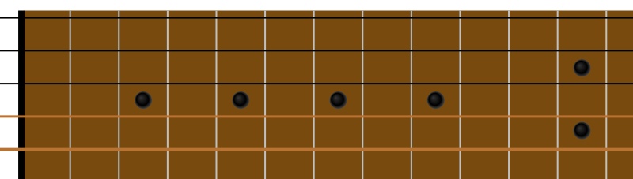

Visualiseur de Gammes de Guitare
Clé
Do
Do#
Ré
Ré#
Mi
Fa
Fa#
Sol
Sol#
La
La#
Si
Gamme
Majeure
Mineure
Penta Min.
Penta Maj.
Blues
Mixolydien
Dorien
Phrygien
Lydien
Éolien
Locrien
Frettes
13 frettes
16 frettes
20 frettes
Vue
Spectateurs
Guitariste
